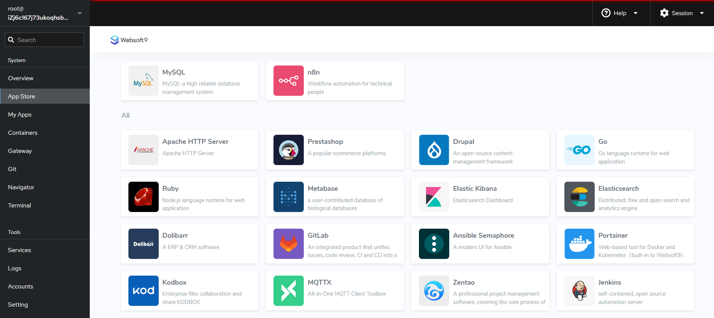

Websoft9 is web-based PaaS/Linux Panel for running 200+ hot open source application on your own server.
Websoft9 help you to run multiple applications in a single server, that means we believe Microservices on single machine is reasonable. On the contrary, it becomes more and more valuable as computing power increases
Although the Cloud Native emphasizes high availability and clustering, but most of the time, applications do not need to implement complex clusters or K8S.
Websoft9's architecture is simple, it did not create any new technology stack, and we fully utilize popular technology components to achieve our product goals, allowing users and developers to participate in our projects without the need to learn new technologies.
